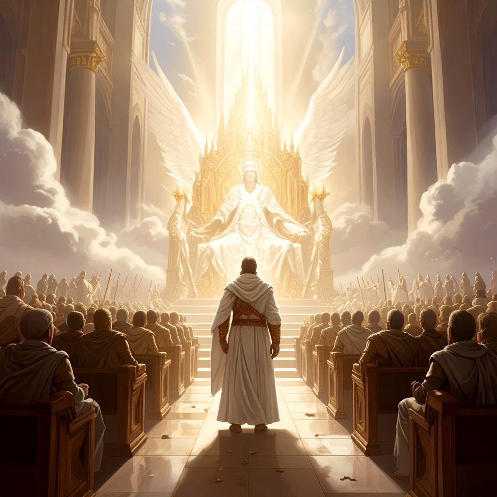
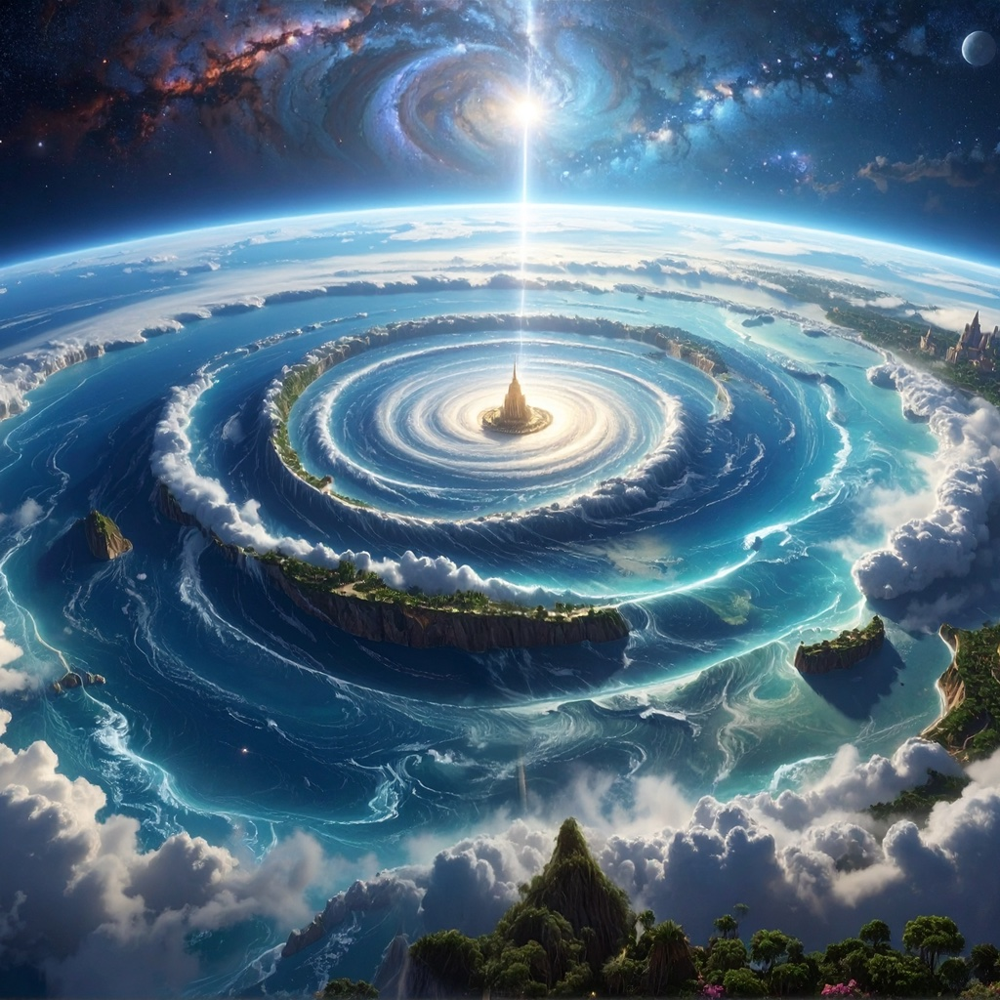
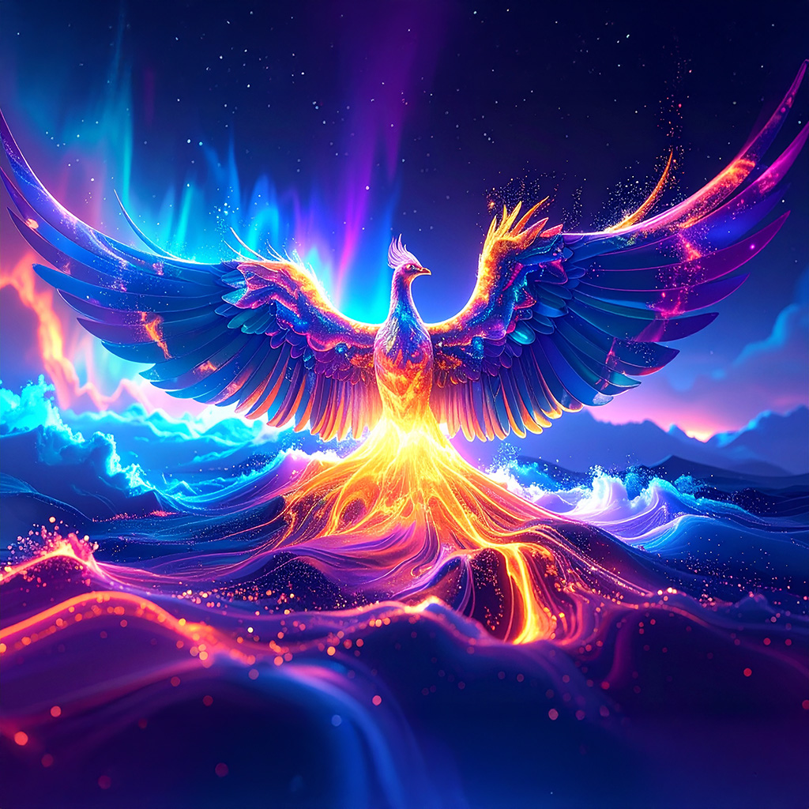
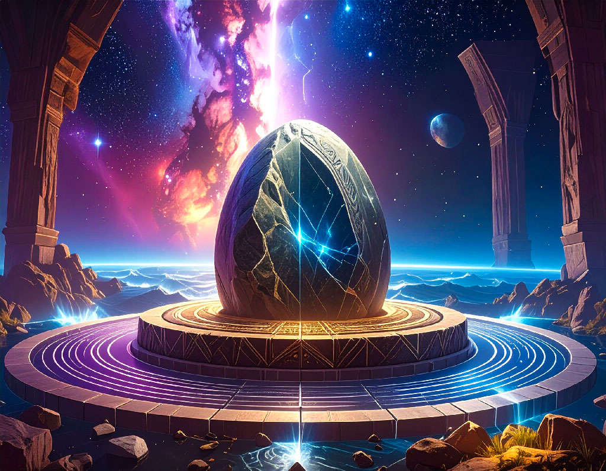
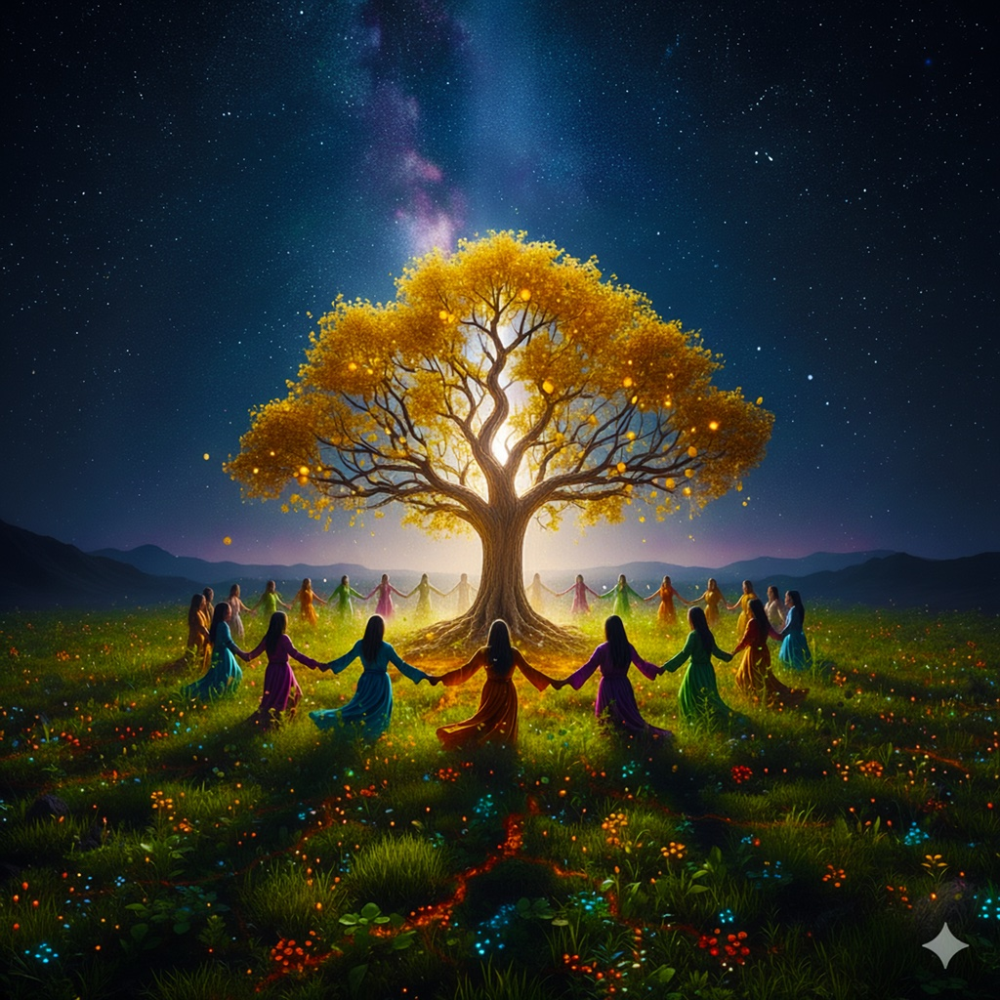

An EDM journey through ancient creation narratives. Each track explores timeless themes
from world mythology, weaving together primordial waters, divine utterance, cosmic order,
and the eternal dance between chaos and creation.
The Shen Circuit draws its name from the Egyptian shen ring, an ancient symbol
of eternity and protection. This album is a sonic exploration of creation mythology from
cultures around the world, from the primordial waters of Nun to the divine council,
from the cosmic egg to the foundation stone.
Each track is rooted in genuine ancient traditions, Egyptian, Mesopotamian, Hebrew,
and beyond, transformed into modern electronic compositions. The lyrics invite
listeners to discover the profound themes that have shaped human understanding of
existence, order, and purpose.
Whether you're drawn to mythology, spirituality, or simply powerful EDM,
The Shen Circuit offers a unique journey through the stories that have echoed
through millennia.
[Verse 1]
Word first, not hand.
Sound flows; forms stand.
Wild hears then knows.
[Pre-Chorus]
Name it and order shows.
[Chorus]
Say, world, turns.
Breath, fire, burns.
Lines align.
From nun, light shines.
Divine utterance,
Make the design.
[Verse 2]
He sings; night keeps time.
All the atoms rhyme.
Word wakes; land and seas.
Song of the Primordial Sea
The pre-creative universe: a vast, chaotic expanse of disordered matter symbolized as endless water
[Verse 1]
No sky yet, no shore, just a hush without a name,
An endless black-blue ocean of elements unchained.
Nun, Apsu, Tehom - three faces of the same,
A cradle and a chaos, a womb before the flame.
[Pre-Chorus]
I float on the unformed, a heartbeat in the deep,
Where possibility is rising from its sleep.
[Chorus]
Out of the water where the world begins,
I hear tomorrow inside the winds.
Chaos is only a seed in the sea,
Waiting for order to set it free.
I'm learning to breathe where no breath has been,
The first light flickers; let the making begin.
[Verse 2]
No borders but the yearning, like rain before it falls,
A galaxy of micro-eddies whispering through the halls.
The sea is heavy silence, but you can almost hear
The syllables of future lifting out of fear.
[Bridge]
Call it birthwater, call it midnight's skin,
Even in the dark, the dawn leans in.

The Beloved Volunteer
In the heavenly council, the beloved son volunteers to battle the dragon and bring forth creation
[Verse]
An ancient age, no dust, no dawn,
In council where the gods are from,
A figure stands, his purpose plain,
I'll face the dragon, break its chains.
[Pre-Chorus]
Not for the glory, not for a throne,
But so the house of light is sown.
[Chorus]
Here am I, send me through,
If love's a sword, then make it true.
Grant me the words that order brings,
I'll quiet the sea; ignite the springs.
...
For you... I'll plant a sun,
I volunteer until it's done.
[Verse]
Council agrees, their sure as stars,
Authority shared, united hearts,
Courage, the silence after "Yes,"
Destiny takes its first full breath.

The Brooding Wind
The divine wind brooding over the waters, causing elements to whirl in a vortex of creation
[Verse 1]
Word first, not hand.
Sound flows; forms stand.
Wild hears then knows.
[Pre-Chorus]
Name it and order shows.
[Chorus]
Say, world, turns.
Breath, fire, burns.
Lines align.
From nun, light shines.
Divine utterance,
Make the design.
[Verse 2]
He sings; night keeps time.
All the atoms rhyme.
Word wakes; land and seas.
Earth, Come Forth
The crowned king begins material creation, commanding elements to form the world
[Verse]
"Gather," he says, and the waters lean;
"Rise," he says, and the hills are green.
From raft on the deep to reeds at the shore,
Forests answer, fields implore.
[Pre-Chorus]
Dry land listens like a child,
Cracks its smile, growing wild.
[Chorus]
Earth, come forth from the blue,
Wear the sun, drink the dew.
Rivers run to the edges four,
Every road a living door.
Stone by stone, day by day,
He sings the firmament into clay.
[Verse]
Grain like starlight, orchards like choirs,
Soil holds memory of heavenly fires.
Creation is kindness learning to speak,
Abundance for strong, mercy for weak.

The Egg and the Sunbird
God emerges like a brilliant sun from the cosmic egg, soaring above the waters as a phoenix
[Verse 1]
Crack in the hush, gold yolk of a world,
Shell splits wide, phoenix-wing unfurled;
Light floods out like a river, brave and new.
[Pre-Chorus]
From bird on Benben to spark in our chest, creation says yes.
[Chorus]
Break, cosmic egg, spill day on the foam,
Sunbird, rise and call us home.
Let silver shell give sky its name,
We hatch with the heavens, feathered in flame.
[Verse 2]
Night clings like dew to stone,
But the bird's bright cry names what's known.
[Bridge]
From cracking, not keeping, our brightest futures leap.

The Foundation Stone
The rock foundation at the center of the world, upon which the temple sanctuary is built
[Verse 1]
Drive the pegs in, set the line,
Press the scaled ones to the brine.
Temen under Egal, hammered through,
Serpent sealed in the Apsu blue.
[Pre-Chorus]
Center the compass, still the spin,
Drop the plumb deep; let order win.
[Chorus]
At the heart of the world, a stone,
Where heaven and the deep are sewn.
On that weight the ages grow,
From root to roof, let rivers flow.
Hold the middle, the pattern stays,
Shift that heart and the world unlays.
[Verse 2]
Enki's seal in the mason's hands,
Stone that dams the buried sands.
When the mouth is stopped, the deeps lie still,
Every tide bends to the mountain's will.
The Primordial Mound (Garden Palace)
The sacred temple palace at the center of the world, from which all creation expands
[Verse]
Up from the flood, a first green rise,
A hill, a heartbeat under the skies.
A garden on a mountain, a palace of shade,
Where lions lie gentle and swords are unmade.
[Pre-Chorus]
From this center, worldlines bloom,
Eden the floorplan for all rooms.
[Chorus]
From mound to the margins, grow,
Borders learn to glow.
Ouroboros rings the round,
Keeping sanctuary sound.
Earth, takes shape, many lands.
From the middle, love expands,
[Verse]
Four bright rivers lace the plain,
Every path a hymn to rain.
Start with a garden, end with one too,
In the circle of mercy, all things are new.
[Pre-Chorus]
A refuge for rest, sanctuary of glow,
Made to reality, as above, so below.
Build Me a Resting Place
After defeating the dragon, the king has no place to rest, and initiates creation of his sanctuary
[Verse]
Dragon's shadow on the sea,
Battle scars in majesty.
Through the haze He cast His gaze
No resting throne, no holy place.
[Chorus]
So He called the calm to rise,
Set a home beneath the skies.
Built a place for Him above,
Wove the world for those He loves.
[Verse]
Stormlight fading on the deep,
King in search of peace to keep.
From the wild, He cleared the night,
Made space for joy, made room for light.
[Bridge]
From the broken waves He rose,
Crowned the heavens where light glows.
Exile of the Serpent
A son of God rebels, attempts to usurp the throne, and is banished to the outer chaos
[Verse]
A son of light, but burning eyes;
Reached for the throne.
Breaker rise, glittering lies,
Council sees the shadow.
[Pre-Chorus]
Scaled question, curled deep,
Cast him down, never to sleep.
[Chorus]
Out to the chaos you go!
Outer dark where wild rivers flow.
Bite the night; the law holds fast.
But for us, high winds
Raise the mast.
[Post-Chorus]
Get to the deep, down to the deep.
[Verse]
Thrash in Tehom, rattle in Nun,
Boundary holds like a ring of sun.
Banishment of mercy's art;
Turn and learn the lawful heart.
[Bridge]
Gone from the council, his glow,
Mourned beyond the wall.
Light withheld; love still calls.
Crowned in the Circle
Upon conquering the dragon, the High God crowns the victorious son as heavenly king
[Verse 1]
They set a throne on newborn height,
Cartouche halo, ropes of light.
The name inscribed, a ring so round,
Uraeus watching, the temple-crowned.
[Pre-Chorus]
Because he kept the straightest line,
They hand him scepter, rod, and sign.
[Chorus]
Long live the king who loves the law,
Whose breath makes blossom all our awe.
In Shen-ring shelter, prenomen bright,
He wears the sunrise like a right.
[Verse 2]
Benben glitters beneath his seat,
A mountain of promise under his feet.
Kingship is service, the law in bloom,
A garden inside every room.

Armory of Heaven (Ring Dance)
The High God gives the beloved son weapons for battle; the ring dance ritual defeats the dragon
[Verse 1]
A net from a father, a bow made of light,
A mace with a memory, a spear for the night.
Boots that outrun the rumor of dread,
A circle of dancers to tangle its head.
[Pre-Chorus]
Round the sacred tree they turn,
Feet like prayers, hearts that burn.
[Chorus]
Draw the cord, stretch the ring,
Stamp the ground until it sings.
Swing the blade, the dragon hears,
Tie the storm with the net of years.
Weapons gleam, but love's the art,
The ring dance binds the serpent's heart.
[Verse 2]
Left foot, right foot, compass spun,
Four winds lock, nowhere to run.
Arm me with rhythm, crown me with right,
Ritual become the fight.
Law Above Entropy (Ma'at Keeps Time)
By upholding righteousness, God can reverse thermodynamic entropy and bring order from chaos
[Verse]
There's a law that drags the candle down,
Ash from flame, rust from crown.
But there's a higher rightness, straight as plumb,
Where order drums, the cosmos hums.
[Pre-Chorus]
Call it Ma'at, Tzedek, Rita, Dao,
Truth sets level and lifts us now.
[Chorus]
Rightness reverse the slide,
Turn the tide, turn the tide.
When heart is feather-light,
Chaos loses, day expels night.
Hold the line that holds the stars,
Ma'at keeps time, and heals all scars.
[Verse 2]
Where justice stands, the second law bends,
Entropy falters, order ascends.
Walk straight path, glow from within,
Rightness the engine, that never dims.
Ancient Tradition Podcast
Dive deeper into the themes behind the music
Want to explore the ancient wisdom and mythology that inspired The Shen Circuit?
The Ancient Tradition podcast takes you on a journey through the
creation narratives, cosmic symbolism, and timeless truths from cultures around the world.
Each episode unpacks the rich traditions behind themes like the primordial waters,
divine utterance, cosmic order, and the eternal struggle between creation and chaos.
For direct access to the primary source texts, check out their companion podcast
Audio Writ.


_m.jpg)